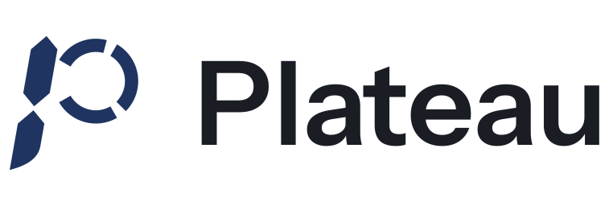

Politique de confidentialité
En bref. Plateau ne collecte aucune donnée. Pas de compte, pas de serveur, pas de publicité, pas d'outil d'analyse.
Tes repas, tes fiches et tes objectifs restent sur ton téléphone. Quand tu scannes un produit que ton téléphone ne connaît pas encore, seul son code-barres part chez Open Food Facts, avec l'adresse IP de ta connexion.
1. Qui édite Plateau
Plateau est éditée par Clément Madzar.
Pour toute question : plateau.app@outlook.com.
2. Ce qui reste sur ton téléphone
Tout ce que tu saisis est enregistré uniquement sur ton iPhone :
- ton journal : les aliments, leur poids et le repas où tu les as mis, jour par jour ;
- les fiches des produits scannés, et les corrections que tu y fais ;
- tes objectifs (calories, protéines, glucides, lipides, fibres) et tes repas ;
- tes réglages.
La table CIQUAL de l'ANSES (Agence nationale de sécurité sanitaire), qui sert à chercher les aliments génériques, est embarquée dans l'app : chercher un aliment par son nom ne passe pas par internet.
Plateau n'envoie rien de tout cela, ni à l'éditeur ni à personne. Il n'y a pas de serveur Plateau.
3. Ce qui part chez Open Food Facts
Quand tu scannes un code-barres que ton téléphone ne connaît pas, Plateau demande sa fiche à Open Food Facts, la base ouverte et collaborative des produits alimentaires, gérée par une association française. La requête contient :
- le code-barres scanné, seul ;
- l'adresse IP de ta connexion, comme pour toute connexion à un site internet ;
- le nom et la version de l'app, avec l'adresse de contact de Plateau (pas la tienne), comme Open Food Facts le demande à toutes les apps qui l'interrogent.
Rien d'autre : ni ton nom, ni ton journal, ni tes poids, ni un identifiant de ton téléphone. La fiche reçue est ensuite copiée sur ton iPhone. Rescanner le même produit ne refait pas d'appel, même sans réseau.
Un code propre au magasin (produit pesé au rayon, par exemple) n'est jamais envoyé.
Ce qu'Open Food Facts fait de l'adresse IP relève de sa propre politique de confidentialité, publiée sur son site.
4. La caméra
La caméra sert seulement à lire le code-barres. La lecture se fait sur le téléphone, avec les outils d'iOS. Aucune image n'est enregistrée ni envoyée. Tu peux retirer l'accès dans Réglages › Plateau › Appareil photo, et chercher les produits par leur nom.
5. Ce que Plateau ne fait pas
- Pas de compte, pas d'inscription, pas d'adresse email demandée.
- Pas de publicité.
- Pas d'outil d'analyse ni de mesure d'audience.
- Pas de pistage entre applications.
- Pas de revente de données : il n'y en a pas à vendre.
Sur l'App Store, la fiche de confidentialité de Plateau indique « Données non collectées ».
6. Sauvegarde et suppression
Comme pour toute app, tes données Plateau sont incluses dans la sauvegarde de ton iPhone si tu l'as activée (iCloud ou ordinateur). Cette sauvegarde est gérée par Apple, selon ses propres règles ; Plateau n'y a pas accès.
Supprimer l'app efface toutes ses données de ton téléphone. Comme rien n'est stocké ailleurs, il n'y a rien d'autre à demander.
7. Tes droits
Plateau ne détenant aucune donnée sur toi, il n'y a rien à consulter, rectifier ou effacer chez l'éditeur. Pour toute question, écris à plateau.app@outlook.com.
Si tu estimes que tes droits ne sont pas respectés, tu peux adresser une réclamation à la CNIL (Commission nationale de l'informatique et des libertés) : cnil.fr/fr/plaintes.
8. Modifications
Si une future version change ce qui quitte ton téléphone, cette page sera mise à jour avant, et la date en haut de page changera.